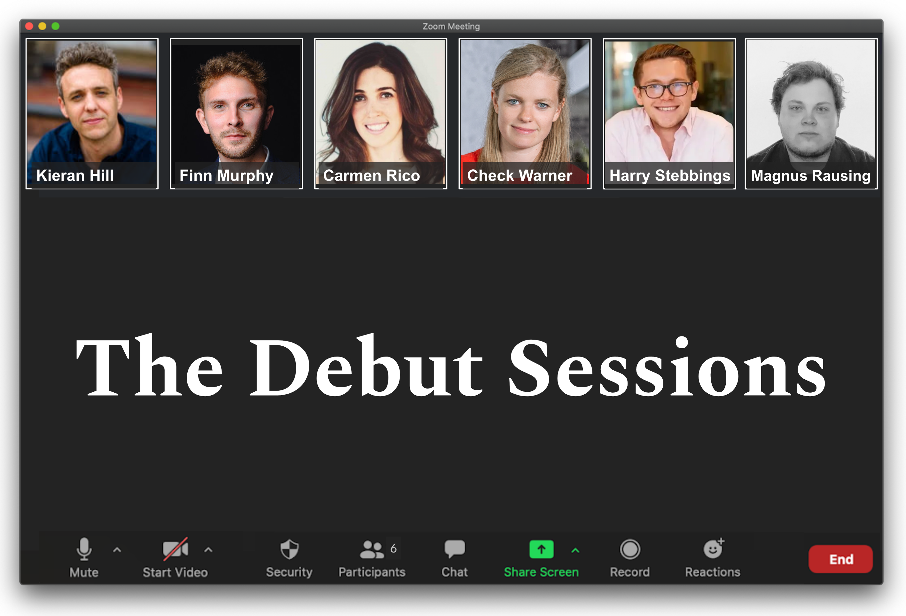

For UK pre-Seed Startups raising their 1st round
If you’re a UK based startup formed in the last 12 months and raising your first round of funding, pitch to a group of active investors, from the comfort of your study or sofa.
Investors
- Kieran Hill (Ascension Ventures)
- Finn Murphy (Frontline Ventures)
- Carmen Rico (Samaipata / The Fund)
- Check Warner (Ada Ventures)
- Harry Stebbings (Stride VC)
- Magnus Rausing (Mahr Projects)
Company Criteria
- Company has been formed within the past 12 months of the Application submission and has a UK registered office
- Raising up to a maximum of £750,000
- Raised less than £100,000 to date
- Focusing on the next generation of platforms and products improving work, life, and health
- Product Demo or Product Wireframes available
The Format
- The sessions will run once a month, where (up to) 4 companies will be selected to pitch remotely to the group of investors
- The selections will be made 7 days in advance of the session, with companies being informed on the same day
- All applicants can select whether they want their application to be kept confidential, or to be added to the open source Google Sheet for the wider ecosystem to access for more exposure
- Investors will follow up with founders they want to progress, within 48 hours of the session